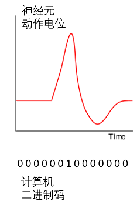
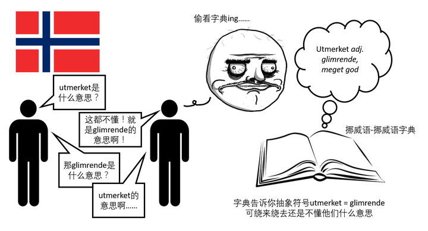
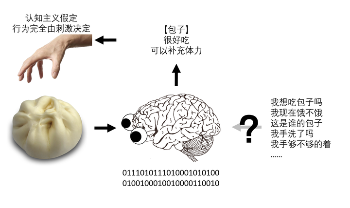

近年来计算机科学甚是吃香。又是大数据又是深度学习，大有要超越人脑的意思。有意思的是30年前的理论家像 Marr(1982)，Kosslyn(1984) 和 Fodor(1983) 等等早就都将大脑假象成一台计算机来建立他们的理论。这些传统的认知主义（cognitivism）理论认为认知（cognition）是建立在对抽象符号的计算上。大脑的神经元通过电势的变化以动作电位（action potential）的形式来编码和传递信息。在计算机里，每个的动作电位可以简化的用一系列的二进制码来表示（其中1表示超过阀值的电位高峰，0表示低于阀值的电位）。如下图：

他们认为既然神经元能够用二进制符号来代表那大脑也一定是用类似的符号来计算的。于是一直到今天的心理学研究大多都关注于大脑如何对各类刺激作出反应，即大脑是如何把各类信息转化成抽象符号来进行加工和储存的。这样一种以外界刺激主导的研究思路对脑科学界有着深远的影响。自各类神经科学研究方法诞生以来，人们使用功能核磁共振脑成像（functional magnetic resonance imaging; fMRI），脑电图（electroencephalography; EEG）等方法来观察大脑的活动。几十年来，人们发现了大脑在功能和结构上的联系（比如五感由不同的脑区来负责加工），也了解了大脑信息加工在电生理上的反映（比如各种经典的事件触发相关电位 [event-related potentials; ERPs] 如N400, N170等等）。不可否认的是认知主义对人脑认知的研究带来了深远的影响和可喜的成就。
认知主义虽收获颇丰，却在理论上有两大缺陷。
**首先，抽象符号无法追溯其在时空中的本源，不能产生意义。**早在1980年John Searle就提出了抽象符号的溯源问题（symbol grounding problem）。用抽象的符号来编码信息能解释很多的认知现象，但是Searle意识到抽象符号和外界事物的联系是任意的，不受时空限制的。这种任意性造成了符号不能明确的追溯它在时空中的本源，无法产生有意义的智慧的行为。
这是什么意思呢？我们可以来看看这个假想的汉语黑盒实验（The Chinese Room）。这里我用挪威语来代替汉语。假设你和朋友两人现在去挪威旅游。为了能够装逼和当地人交流你带了一本挪威语-挪威语字典（不是汉语-挪威语字典哦，因为逼格不够）。到了挪威以后你在街上看到了一个字叫做 utmerket。你朋友问你这是什么意思，你转过身去快速的翻了字典，找到了相应的词条，回过身来很自豪的答道：“这你都不知道，就是 glimrende 的意思啊！”

对于不懂挪威语的人来说，utmerket 和 glimrende 只不过是两个抽象的符号而已。这两个符号之间的联系是任意的（由这本字典定的），并不局限于任何物理学的定律。原则上，utmerket 可以是 glimrende 的意思，也可以是 misforståelse 的意思，也可以是 bussholdeplassen 的意思，对于不懂挪威语的你来说并没有什么不妥。我们把这本字典比作你的认知系统。你能用这个系统按照某种规则把两个符号联系了起来，但却并不能真正理解这些符号代表的含义。即使把整本挪威语-挪威语字典啃下来结果也是一样的。
这个假想的实验告诉我们：抽象符号间的联系是不能产生意义的。无论大脑是如何编码和处理信息，这些信息的代表物都必须是能够和时空有意的（而不是任意的）联系起来的。
**其次，认知主义将行动（action）和感知（perception）看做两个独立的个体，对二者之间是如何互动的在理论上并没有特别的考虑。**这个理论上的缺陷是从前一个衍生出来的。根据认知主义的思路，外界的信息先被感觉器官采集，在大脑这个黑盒中以抽象符号的形式翻译和加工，最后转化成运动指令来指导行为。
用吃货的话说就是：

在大脑计算加工包子这样一个过程中，你抓包子的欲望和行为是没有任何参与的。运动系统只有在认知完成后才被调动起来。这样的思路一是不能很好的解释大脑是怎样把感官的信息转化成符号，然后又从符号转化成行为的指令（即认知过程就是一黑盒）。二是假定行为是完全由感官刺激（包子）决定的，并没有考虑到个体行为是受个体生物学基础（比如你饿不饿，喜不喜欢吃饱子）和外界环境（比如这是免费的包子还是别人的包子）所制约的。
你也许要问了：“可我最终还是把包子抓起来吃了呀，把感知和行动独立开来有什么不妥的么？”
行动和感知的二元论在原则上是可行的，但是认知的效率要大打折扣（这个以后细讲）。重要的是，它在解释一些认知现象的时候不是特别给力。心理学上有这样一个著名的幻觉叫McGurk现象。它展示了在听语言的时候视觉和听觉的互动作用。大家可以去搜 McGurk effect看看相关的视频。比如看这里The McGurk Effect – 腾讯视频视频。这个视频发的是Ba Ba Ba的音频，加上Ga Ga Ga的嘴形，实际上听到的是类似Da Da Da的音。那为什么看嘴形会影响到语音的感知呢？如果我们用二元论的思路来看，听语言和说语言是互相独立的。这样的话听的Ba Ba Ba和看到的Ga Ga Ga就会被独立的感知到，并不会融合成Da Da Da的幻觉。大脑能形成这样的幻觉是因为嘴形的视觉信息激活了说话的运动系统。接下来有两种解释。一是运动系统产生对Ga Ga Ga声音的预演，与听到的Ba Ba Ba融合起来形成Da Da Da的幻觉（即听的幻觉）。或是听到的Ba Ba Ba在大脑里激活发出Ba Ba Ba的运动指令，看到的Ga Ga Ga激活发出Ga Ga Ga的运动指令。两个一相加就形成了发Da Da Da音的指令（即说的幻觉）。不论用哪种解释，我们可以看到感知和运动系统是息息相关密不可分的，而认知的整个过程是建立在感知运动系统的互动之中的。
到这里你也许要问了：“那怎样才能解决符号的溯源问题呢？大脑到底是如何编码信息的？感觉和运动系统的互动又是如何帮助我们在这个世界中生存的？”
在我今后的文章里，我会介绍近年来具身认知（embodied cognition）这股思潮是怎样在理论上解决以上这些问题，在实践中有什么样的证据支持，以及它独有的理论缺陷和面临的挑战。比如大家可以了解一下为什么没有身体的大脑是无法思考的？
参考文献：
- Fodor, J. A. (1983). The modularity of mind: An essay on faculty psychology. MIT press.
- Kosslyn, S. M. (1996). Image and brain: The resolution of the imagery debate. MIT press.
- Marr, D. (1982). Vision: A Computational Investigation into the Human Representation and Processing of Visual Information. New York: Freeman.
- Searle, J. R. (1980). Minds, brains, and programs. Behavioral and Brain Sciences, 3(03), 417-424.